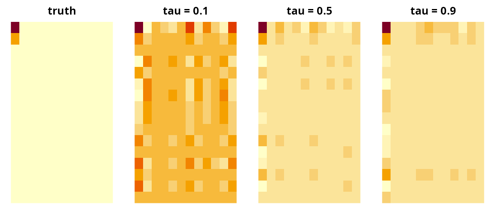

library(tensory)
#>
#> Attaching package: 'tensory'
#> The following object is masked from 'package:stats':
#>
#> reshape
#> The following object is masked from 'package:utils':
#>
#> find
#> The following object is masked from 'package:methods':
#>
#> kronecker
#> The following objects are masked from 'package:base':
#>
#> %*%, kronecker, scaleThe problem this solves
Each subject contributes a whole array — an image, a
region-by-region connectivity matrix, a sensor-by-time grid — and one
continuous outcome. Mean regression asks how the array moves the
average outcome. pqtr() asks how it moves a
particular quantile.
The two questions come apart whenever the interesting subjects are
not the average ones. A brain region may barely shift mean cognitive
score while strongly predicting who ends up in the bottom decile. A
predictor may leave the median alone and widen the spread. Mean
regression sees neither effect; fitting tau = 0.1 and
tau = 0.9 and comparing the two coefficient arrays
does.
Quantile regression also makes no assumption about the error distribution and is unmoved by outliers in the outcome, which is worth having on its own when the response is skewed or heavy-tailed.
The obstacle is size. A 32 x 32 image is 1,024 predictors; with 200
subjects the flattened quantile regression has no unique solution, and
flattening also throws away the grid — it forgets that row 4 column 12
sits next to row 4 column 13. pqtr() keeps the grid,
compressing each dimension of the array separately into a few
directions chosen for their association with the quantile of interest,
then mapping the answer back to the original shape.
Which function do I want?
pqtr() |
tepls() |
spgtr() |
|
|---|---|---|---|
| Models | a quantile of the outcome | the mean | a GLM mean (any family) |
| Outcome | continuous | continuous, one or several | binary, count, continuous, … |
| Extra covariates | yes, unreduced | no | yes, unpenalized |
| Selects whole slices | no | no | yes, via an L2,1 penalty |
| Robust to outliers | yes | no | no |
How to lay out your data
Two forms are accepted, and they are interchangeable.
A list, one array per subject. Every element must have the same dimensions.
set.seed(1)
p <- c(16, 12)
n <- 300
X <- lapply(seq_len(n), function(i) matrix(rnorm(prod(p)), p[1], p[2]))
length(X)
#> [1] 300
dim(X[[1]])
#> [1] 16 12One big array with subjects in the last
mode. Data that already arrives as a 16 x 12 x 300
block can be handed over directly.
The outcome is a numeric vector of length n. Unlike
tepls(), one outcome at a time — a quantile is defined for
a scalar.
Quick start
The signal below sits in the top-left corner of the image, and the noise grows with it. The corner shifts the median and shifts the upper tail by more, so the coefficient array depends on which quantile is asked for.
B_true <- outer(c(2, 1, rep(0, p[1] - 2)), c(1.5, rep(0, p[2] - 1)))
signal <- vapply(X, function(xi) sum(B_true * xi), numeric(1))
y <- signal + 0.4 * (1 + 0.8 * (signal - min(signal))) * rnorm(n)
med <- pqtr(X, y, tau = 0.5)
med
#> <pqtr: partial quantile tensor regression>
#> Quantile (tau): 0.5
#> Subjects: 300
#> Array shape: 16 x 12
#> Directions (u): 1 1 (1 latent score)
#> Covariates (Z): 0
#> Check loss: 423.395u was not supplied, so pqtr() chose the
number of directions per mode. The coefficient is an array of the same
shape as one subject’s data:
B_med <- as.tensor(coef(med))$as_array()
dim(B_med)
#> [1] 16 12
round(B_med[1:4, 1:4], 2)
#> [,1] [,2] [,3] [,4]
#> [1,] 2.54 -0.17 0.36 -0.01
#> [2,] 0.77 -0.05 0.11 0.00
#> [3,] -0.14 0.01 -0.02 0.00
#> [4,] -0.64 0.04 -0.09 0.00The same data at three quantiles, with u fixed so the
three fits are compared on equal terms:
fits <- lapply(c(0.1, 0.5, 0.9), function(t) pqtr(X, y, tau = t, u = c(1, 1)))
names(fits) <- c("tau = 0.1", "tau = 0.5", "tau = 0.9")
vapply(fits, function(f) sqrt(sum(f$bvec^2)), numeric(1))
#> tau = 0.1 tau = 0.5 tau = 0.9
#> 1.749349 3.234018 3.685464The coefficient grows moving up the distribution, which is how the data were generated:
op <- par(mfrow = c(1, 4), mar = c(1, 1, 2, 1))
image(t(B_true[p[1]:1, ]), main = "truth", axes = FALSE)
for (nm in names(fits)) {
image(t(as.tensor(coef(fits[[nm]]))$as_array()[p[1]:1, ]), main = nm,
axes = FALSE)
}
par(op)Predictions are fitted conditional quantiles, not conditional means:
q10 <- predict(fits[["tau = 0.1"]])
q90 <- predict(fits[["tau = 0.9"]])
c(below_q10 = mean(y < q10), below_q90 = mean(y < q90))
#> below_q10 below_q90
#> 0.1 0.9About 10% of subjects fall below the fitted 10th percentile and about 90% below the fitted 90th; minimizing the check loss forces that calibration in sample.
The gap between the two is a prediction interval for a new subject, one that widens where the model says the outcome is more variable:
width <- q90 - q10
summary(width)
#> Min. 1st Qu. Median Mean 3rd Qu. Max.
#> 1.253 7.637 10.088 10.039 12.301 22.785Choosing the number of directions
u is the one knob: how many directions to keep in each
mode. u = c(1, 1) keeps one row-pattern and one
column-pattern; u = c(3, 2) keeps three and two. Larger
u means a more flexible fit, with prod(u)
latent scores fed to the quantile regression.
Left at its default NULL, pqtr() uses an
eigenvalue-ratio rule: for each mode it takes the largest gap between
consecutive eigenvalues of that mode’s signal matrix, searching a few
candidates.
med$u
#> [1] 1 1When you know the structure, say so — a scalar is recycled across modes:
Otherwise cross-validate. pqtr_cv() scores a grid by
out-of-fold check loss and returns the model refitted at the winner:
set.seed(2)
cv <- pqtr_cv(X, y, tau = 0.5, u_grid = 1:4, nfolds = 5)
cv$cv
#> u loss
#> 1 1 x 1 95.07699
#> 2 2 x 2 97.52210
#> 3 3 x 3 98.54563
#> 4 4 x 4 102.36129
cv$u_min
#> [1] 1 1The default grid keeps the same number of directions in every mode. To let the modes differ, pass the candidates yourself:
grid <- list(c(1, 1), c(2, 1), c(1, 2), c(2, 2))
pqtr_cv(X, y, tau = 0.5, u_grid = grid, nfolds = 3)$u_min
#> [1] 1 2Prefer the smallest u within noise of the best: extra
directions cost parameters in the quantile regression and start fitting
noise.
Covariates that should not be reduced
Age, sex, batch, scanner — variables to adjust for but not compress —
go in Z. They enter the model unreduced, and they also
enter the dimension reduction, where the outcome is replaced by its
working residual from a quantile regression on Z alone. The
extracted directions therefore describe the part of the array not
already explained by the covariates.
Z <- cbind(age = rnorm(n), male = rbinom(n, 1, 0.5))
y_adj <- y + Z %*% c(2, -1)
fit_z <- pqtr(X, as.vector(y_adj), tau = 0.5, Z = Z, u = c(1, 1))
round(fit_z$gamma, 2)
#> [1] 1.46 -0.93predict() then needs the new covariates as well:
What is in the fit
names(med)
#> [1] "coef" "core" "W" "alpha" "gamma" "bvec"
#> [7] "scores" "dims" "u" "tau" "q" "n"
#> [13] "Xbar" "Zbar" "Sig" "U" "fitted" "residuals"
#> [19] "y" "loss"-
coef— the coefficient array as aTTensor, with corecoreand weight matricesW.coef(fit)returns it;as.tensor(coef(fit))expands it to a dense array;fit$bvecis the same thing flattened. -
W— one matrix per mode,p_k x u[k], whose columns are the directions kept in that mode. These have orthonormal columns. -
alpha,gamma— intercept and covariate coefficients, on the centered scale (predict()handles the centering for you). -
u,dims,tau,n— the shape of the problem. -
fitted,residuals,loss— fitted conditional quantiles, their residuals, and the attained check loss. -
scores— then x prod(u)compressed coordinates, useful for plotting or as input to another model.
The per-mode directions are interpretable on their own. The first mode’s direction should concentrate on rows 1 and 2 and the second mode’s on column 1:
Out-of-sample check loss
In-sample calibration is guaranteed by construction, so it proves
nothing. Hold data out and score with the same check loss the method
minimizes: for a fitted quantile q, the loss on a new
subject is (y - q) * (tau - 1{y < q}).
set.seed(3)
tr <- sample(n, 200)
te <- setdiff(seq_len(n), tr)
check <- function(r, tau) mean(r * (tau - (r < 0)))
f <- pqtr(X[tr], y[tr], tau = 0.5, u = c(1, 1))
c(in_sample = check(y[tr] - predict(f), 0.5),
out_sample = check(y[te] - predict(f, X[te]), 0.5))
#> in_sample out_sample
#> 1.351274 1.811210A useful baseline is the constant fit, which ignores the array entirely:
check(y[te] - median(y[tr]), 0.5)
#> [1] 2.148916predict() accepts new data in either input form and
checks the dimensions:
How it works
pqtr() implements the algorithm of Sun et al. (2024).
The outcome enters the dimension reduction only through its working
residual from a quantile regression on Z alone (the sample
quantile when Z is absent); each mode of the array is
compressed to a few directions associated with that residual, the
quantile regression is refitted on the compressed predictor together
with the covariates, and the reduced coefficient is expanded back to the
shape of the original array. No prod(p) x prod(p) matrix is
inverted, only the per-mode p_k x p_k ones, which is why
the number of subjects can be far smaller than the number of cells in
the array. Only the dimension reduction is approximate: the final fit is
an exact linear quantile regression on the scores. Sun et al. (2024)
give the derivation.
Relation to the reference implementation.
pqtr() is a port of the MATLAB code released with the paper
(https://github.com/dayusun/PQTR), with deliberate
differences.
- The inner quantile regressions use the MM algorithm of Hunter &
Lange (2000), whose surrogate is matched to the check loss, rather than
MATLAB’s
fminunc, a smooth solver applied to a non-smooth objective. - The predictor is centered before the latent scores are formed. This
changes what
alphameans — it is now the intercept at the training means — but leaves the coefficient array identical. - Cross-validated selection lives in
pqtr_cv(), which takes an explicit grid instead of enumerating every combination of per-mode dimensions; the default grid uses one common dimension, and anything else can be passed by hand. - The eigenvalue-ratio rule searches at most five candidate dimensions
per mode instead of about
sqrt(n)of them. Past the rank of the signal matrix the eigenvalues are noise, and the largest ratio among them wins: on the data above the wider search returnsu = c(12, 11), which is 132 latent scores from 300 subjects. This is the same capspgtr()andtepls()use.
The deflation follows the reference code: the oblique projector
I - Sigma_k W (W' Sigma_k W)^-1 W', which leaves the weight
matrices with orthonormal columns. It is not the SIMPLS
deflation used by tepls() and spgtr(), which
instead makes the latent scores uncorrelated. The two coincide when the
signal matrix has rank one and differ otherwise.
References
Sun, D., Qiu, Z., Peng, L., Guo, Y. and Manatunga, A. (2024). Partial quantile tensor regression. Journal of the American Statistical Association 120(551), 1724–1735. doi:10.1080/01621459.2024.2422129
Hunter, D. R. and Lange, K. (2000). Quantile regression via an MM algorithm. Journal of Computational and Graphical Statistics 9(1), 60–77.